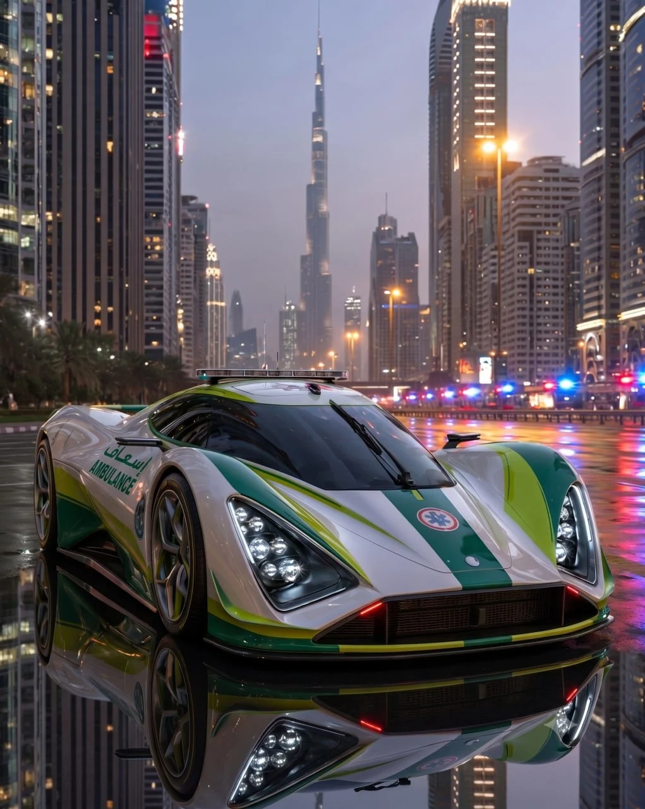

BURJ KHALIFA • LIFESTYLE • BUSINESS
Discover the center of modern Dubai, where luxury living, iconic landmarks, world-class shopping and business opportunities come together.
Downtown Dubai is one of the city's most prestigious districts and serves as the symbolic center of modern Dubai. Developed around Burj Khalifa and Dubai Mall, it has become a destination for residents, tourists, entrepreneurs and investors.
Downtown Dubai is home to some of the world's most recognized landmarks and attractions. The district combines luxury residential towers, premium hotels, fine dining and entertainment venues within a walkable urban environment.
Visitors come to Downtown Dubai to experience:
• Burj Khalifa
• Dubai Mall
• Dubai Fountain
• Dubai Opera
• Souk Al Bahar
Downtown Dubai offers some of the city's finest hospitality experiences.
• Address Downtown
• Armani Hotel Dubai
• Palace Downtown
• Kempinski Central Avenue
The district features a diverse dining scene ranging from casual cafes to fine dining restaurants with views of Burj Khalifa and Dubai Fountain.
Residents enjoy modern apartments, premium amenities, strong transport connections and proximity to major business districts.
The area attracts professionals, executives, entrepreneurs and international residents seeking a luxury urban lifestyle.
Downtown Dubai remains one of Dubai's most desirable real estate markets. Premium locations, high rental demand and international appeal continue to attract investors.
Downtown Dubai is ideal for:
• Business professionals
• Entrepreneurs
• Luxury travelers
• Property investors
• Relocating professionals
Downtown Dubai represents the modern face of the city. With iconic landmarks, luxury hospitality, premium residences and strong business connectivity, it remains one of the most desirable districts in Dubai for both visitors and residents.